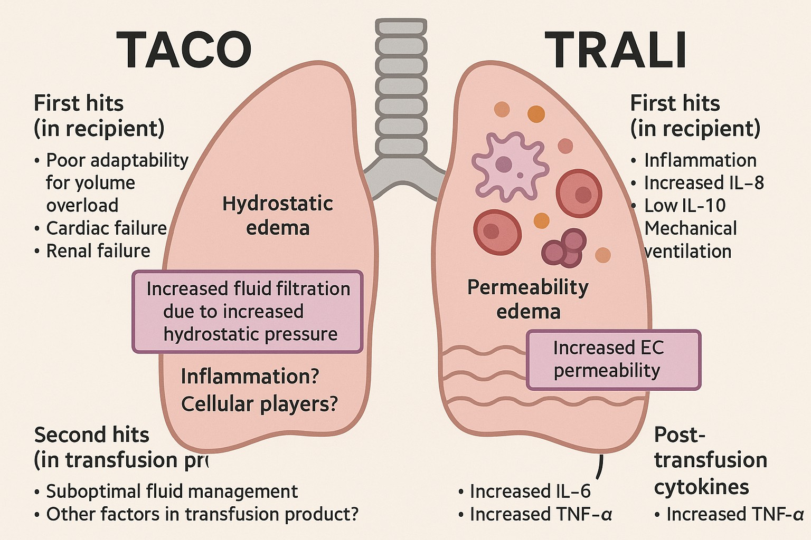

TRALI
Tuesday, April 15, 2025
12:08 AM
|
|
說明 |
|
Type 1 TRALI |
|
|
Type 2 TRALI |
|
|
特徵 |
TRALI |
TACO |
|
病理機制 |
• 非心源性肺水腫 |
• 心源性肺水腫 |
|
臨床表現 |
• 輸血後6小時內發生 |
• 循環負荷過重表現 |
|
CXR特徵(其實就是 non-cardiogenic vs cardiogenic pulmonary edema) |
• 雙側對稱性浸潤 |
• 雙側浸潤 |
|
治療方式 |
• 支持性治療為主 |
• 停止輸血 |
|
預防策略 |
• 篩查高風險供血者 |
• 控制輸血速度 |
|
預後 |
• 24-48小時內可能改善 |
• 對治療反應較好 |

使用 OneNote 建立。